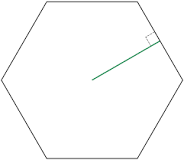

Glossary Hexagons¶

- Apotherm
 The apothem (sometimes abbreviated as apo) of a regular polygon is a line segment from the center to the midpoint of one of its sides. Equivalently, it is the line drawn from the center of the hexagon that is perpendicular to one of its sides (edges). The word “apothem” can also refer to the length of that line segment.
- Edge
Any of the six sides of a hexagon.
- emp
Edge Mid Point. The mid-point of each edge of the hexagon, six in all.
- etp
Edge trisect points. Two interior points per edge of hexagons, 12 in all.
- Flat
Refers to the orientation of the hexagon on the screen, where the topmost part of the hexagon is a horizontal edge. A hexagon can either be Flat or Pointy-topped.
- height
Refers to the height of a regular hexagon.
- Inradius
The radius of a circle inscribed in the regular hexagon is equal to a half of its height, which is also the apothem: r = √3/2 * size
- Pointy-topped
Refers to the orientation of the hexagon on the screen, where the topmost part of the hexagon is a point, the place where two edges are meeting at a vertex. A hexagon can either be Pointy-topped or Flat.
- Segment
A segment is a one-sixth triangle of the hexagon. It has 2 spokes and one Edge, from the center. I.e. each regular hexagon is made up for 6 segments.
- Size
The size of a regular hexagon is the length of one Edge. Sometimes this is also referred to as the radius of the hexagon. See also Inradius.
- Spoke
A spoke is a straight line connecting a Vertex of the polygon to its center. Analogous to the radius of a circle.
- Vertex
A point at which two polygon edges of a polygon meet. It is where two :term:’Edge’s meet.
- x-axis
One of the three axes of a regular hexagonal grid. For flat hexagons, it goes from the West to East, horizontally.
- y-axis
One of the three axes of a regular hexagonal grid. For flat hexagons, it goes from the NorthWest down to the Southeast.
- z-axis
One of the three axes of a regular hexagonal grid. For flat hexagons, it goes from the NorthEast down to the Southwest direction.
- xat
abbreviated form of an Xattitude, which are simply lines parallel to the horizontal x-axis. See also Yattitude and Zattitude.
- yat
abbreviated form of an Yattitude, which are simply lines parallel to the horizontal y-axis. See also Xattitude and Zattitude.
- zat
abbreviated form of an Zattitude, which are simply lines parallel to the horizontal z-axis. See also Xattitude and Yattitude.
{kind=link}